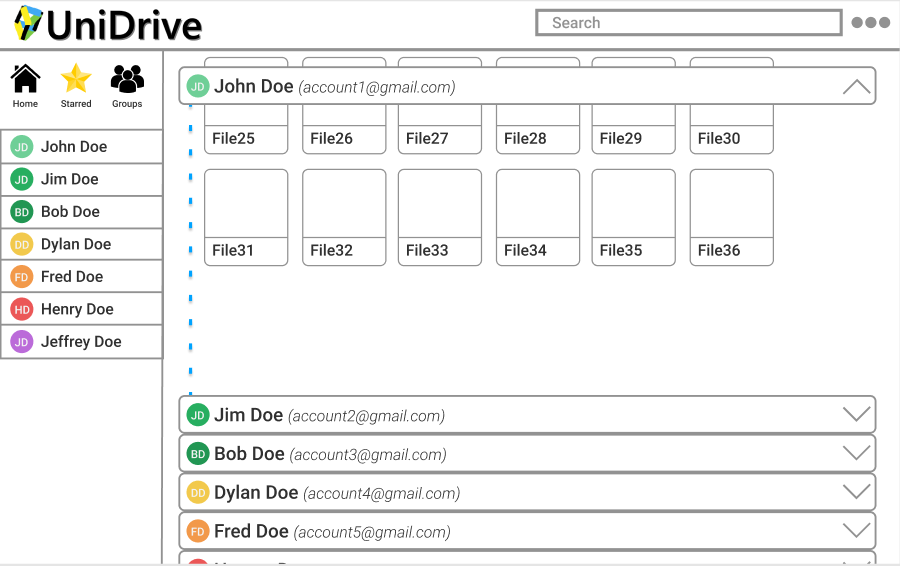

UniDrive is a web application our team of six built for our client at Sandia National Labs to provide Google
Drive users a central file organizational structure for all of their Google Drive accounts.
Languages: JavaScript, HTML, CSS
Frameworks: React JS
APIs: Google Drive API
Other Tools: GIT, GitHub, Figma
Period: Jan. 2020 - Nov. 2020
Google Drive and the Google office web applications are a frequent collaboration mechanism for distributed teams. The easily accessible drive, the ability to share, and the sufficiently functional office web apps makes using other options a difficult choice. The difficulty arises when a person has many such collaborations, including different years for a project each being under a different drive. With all of these places to look for files, it becomes tedious.
We created our digital prototype for our project in Figma which can be seen here: https://www.figma.com/file/Fz6RCL1chYVQEcKkPPqcSW/UniDrive?node-id=0%3A1
